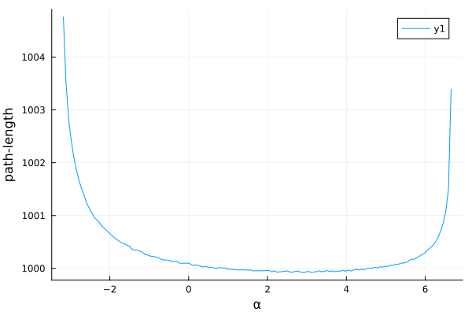

Tracing auxiliary quantities
There are many scenarios where it may be useful to trace additional quantities along a geodesic, such as with radiative transfer or polarization. Gradus.jl provides some methods in an attempt to streamline how new quantities and physics may be added.
As an example, let us consider tracing the path-length (a scalar) along the trajectory as we are integrating. Principally, we need only provide a new AbstractTrace, which is used to dispatch our method, and implement either geodesic_ode_problem or assemble_tracing_problem function.
Gradus.geodesic_ode_problem — Functiongeodesic_ode_problem(
trace::AbstractTrace,
m::AbstractMetric,
pos,
vel,
time_domain::Tuple,
callback
)Returns an OrdinaryDiffEq.ODEProblem{false}, specifying the ODE problem to be solved. The precise problem depends on the AbstractTrace and AbstractMetric defined.
May be overwritten to more easily define a new tracing problem. The standard geodesic equation implemention looks like:
function geodesic_ode_problem(
::TraceGeodesic,
m::AbstractMetric,
pos,
vel,
time_domain,
callback,
)
function f(u::SVector{8,T}, p, λ) where {T}
@inbounds let x = SVector{4,T}(@view(u[1:4])),
v = SVector{4,T}(@view(u[5:8]))
dv = SVector{4,T}(geodesic_equation(m, x, v))
# modify the differential equation here
vcat(v, dv)
end
end
# add additional parameters here
u_init = vcat(pos, vel)
ODEProblem{false}(
f,
u_init,
time_domain,
# specify parameters needed by `f` here
IntegrationParameters(StatusCodes.NoStatus);
callback = callback,
)
endSee also TraceGeodesic and TraceRadiativeTransfer.
Gradus.assemble_tracing_problem — Functionassemble_tracing_problem(trace::AbstractTrace, config::TracingConfiguration)Merges callbacks, defines an ODE builder through (a variation of) geodesic_ode_problem, and wraps the ODE problem depending on the input argument types.
This function need only be overwritten if the AbstractTrace requires fine control or non-standard arguments when building the ODE. See, e.g., the TraceRadiativeTransfer implementation.
For merging the callbacks, use create_callback_set.
For wrapping arguments, use the utility function wrap_arguments.
Path-length example
The AbstractTrace type we define is used to hold on to any quantities we want to be able to set for a given tracing problem. This commonly includes the mass and/or charge of the geodesic, or some initial vector in the case of parallel transport. In our case, we will mandate that all path-lengths start at 0, and therefore only provide the mass μ as a field.
struct TracePathLength{T} <: Gradus.AbstractTrace
"Geodesic mass"
μ::T
endThe path-length will be calculated as a local toy path-length for simplicity:
\[\text{d}s^2 = \text{d}r^2 + \text{d}\theta^2 + \text{d}\phi^2,\]
which we can express as a differential equation
\[\frac{\text{d}s}{\text{d}\lambda} = \sqrt{\left(\frac{\text{d}r}{\text{d}\lambda}\right)^2 + \left(\frac{\text{d}\theta}{\text{d}\lambda}\right)^2 + \left(\frac{\text{d}\phi}{\text{d}\lambda}\right)^2}.\]
Writing this as a Julia function
function dsdλ(v)
l2 = (v[2])^2 + (v[3])^2 + (v[4])^2
sqrt(l2)
endThen we specify how the tracing problem should be put together. This is currently quite a lot of boilerplate code, but gives us plenty of control over how the tracing problems are built should we need it. We first write the function that generates our ODEProblem:
function Gradus.geodesic_ode_problem(
::TracePathLength,
m::AbstractMetric,
pos,
vel,
time_domain,
callback,
)
# note this function takes SVector{9} instead of SVector{8}
function f(u::SVector{9,T}, p, λ) where {T}
@inbounds let x = SVector{4,T}(u[1:4]), v = SVector{4,T}(u[5:8])
# geodesic equation as usual
dv = SVector{4,T}(Gradus.geodesic_equation(m, x, v))
# calculate our path length difference
ds = dsdλ(v)
# concatanate the quantities
vcat(v, dv, SVector(ds))
end
end
# append the initial pathlength
u_init = vcat(pos, vel, SVector(zero(eltype(pos))))
# this function returns a `OrdinaryDiffEq.ODEProblem` type
Gradus.ODEProblem{false}(
f,
u_init,
time_domain,
Gradus.IntegrationParameters(StatusCodes.NoStatus);
callback = callback,
)
endWe are then ready to trace! For example, using some code from Getting started:
m = KerrMetric(1.0, 0.8)
x = SVector(0.0, 1000.0, deg2rad(90), 0.0)
α = range(-10.0, 10.0, 300)
vs = map_impact_parameters(m, x, α, 0.0)
xs = fill(x, size(vs))
λ_max = 2000.0
sols = tracegeodesics(m, xs, vs, λ_max, trace = TracePathLength(0.0))
# get the path lenght for each geodesic
points = unpack_solution(sols)
lengths = map(p -> p.aux[1], points)
# filter only those that fell into the black hole
I = map(i -> i.status == StatusCodes.WithinInnerBoundary, points)
plot(α[I], lengths[I], xlabel = "α", ylabel = "path-length")